Do solo ao bioinsumo, análises em que o agro confia
O LAMAM entrega laudos confiáveis para produtores, cooperativas e empresas — apoiando decisões no campo e o controle de qualidade da sua produção.

Análises que orientam decisões no campo
Clique em uma análise para ver os detalhes e o material de coleta e envio das amostras.
Guias gratuitos para consultar
Referências de interpretação de laudos e de coleta/envio de amostras — de uso livre.
Guia de interpretação de laudos nematológicos
Níveis de dano econômico de fitonematoides por espécie e por cultura — o que o resultado da sua análise significa e como decidir o manejo.
Acessar o guia →
Fungos benéficos do solo
Trichoderma, Clonostachys, Purpureocillium e fungos totais — o que a contagem (UFC/g) significa para o manejo biológico.
Acessar o guia →
Fungos fitopatogênicos do solo
Fusarium e Macrophomina — como interpretar o risco por densidade de inóculo no solo.
Acessar o guia →
Compatibilidade biológicos × químicos
Como avaliamos, por UFC, se o biológico sobrevive na mistura — e os parâmetros que você pode configurar.
Acessar o guia →
Patologia de sementes
Padrões sanitários oficiais (PNQR), principais fungos de campo e de armazenamento e como ler o laudo de sanidade.
Acessar o guia →

Microbiologia encontra tecnologia
O LAMAM — Laboratório Mineiro de Análises Agrícolas e Microbiológicas é especializado em microbiologia do solo e controle de qualidade de bioinsumos. Sediado em Patos de Minas (MG), atende todo o país com metodologias reconhecidas e atendimento próximo.
Nossa missão é transformar análises em informação útil para o campo — com resultados confiáveis, rastreáveis e bem documentados. Da caracterização do solo ao controle de qualidade de bioinsumos, nossa estrutura foi pensada para dar segurança às decisões de quem produz no campo.
- Cadastro no MAPA nº MG-01239
- Participação em ensaios interlaboratoriais com a Embrapa Soja
- Portfólio de 14 análises especializadas para o agro
A vida microbiana em detalhe
Imagens de microscopia do nosso laboratório — fungos, bactérias e fitonematoides revelados em alta definição.
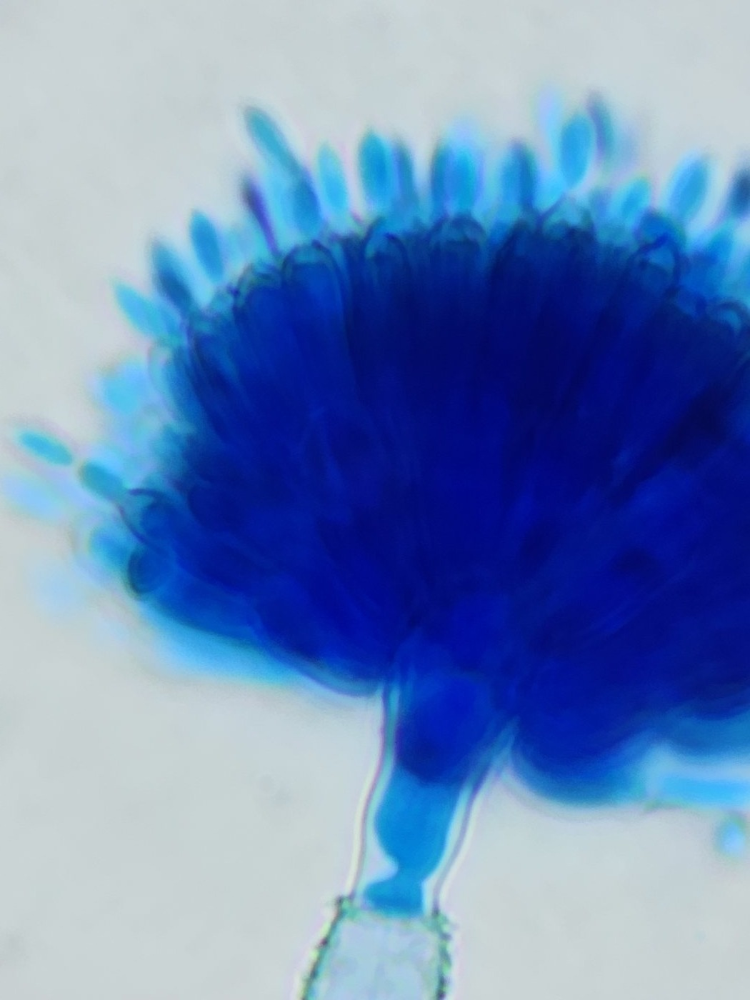
© Lab. LAMAM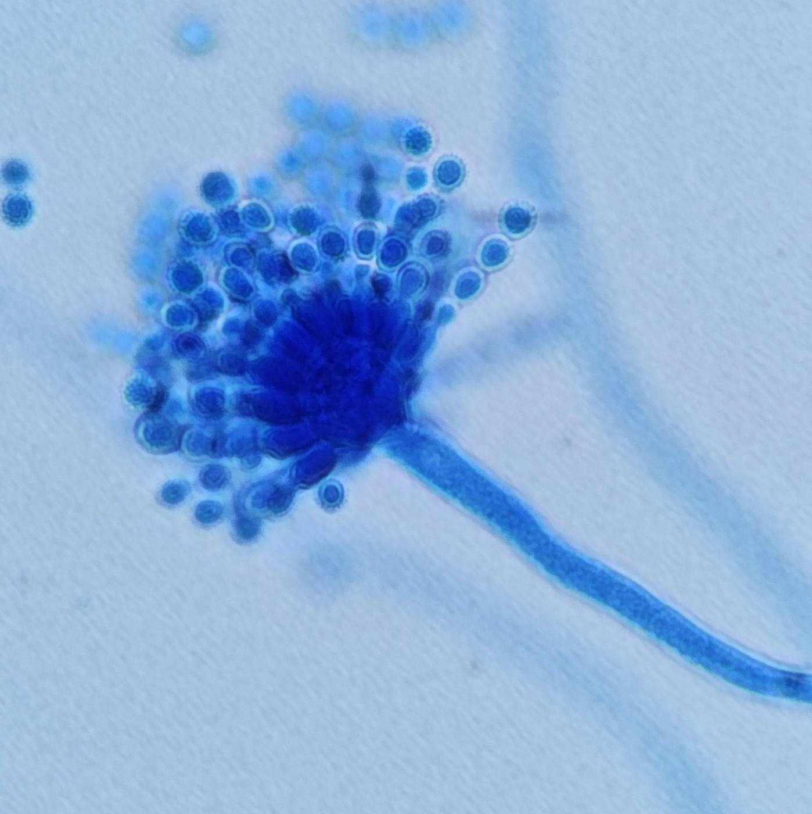
© Lab. LAMAM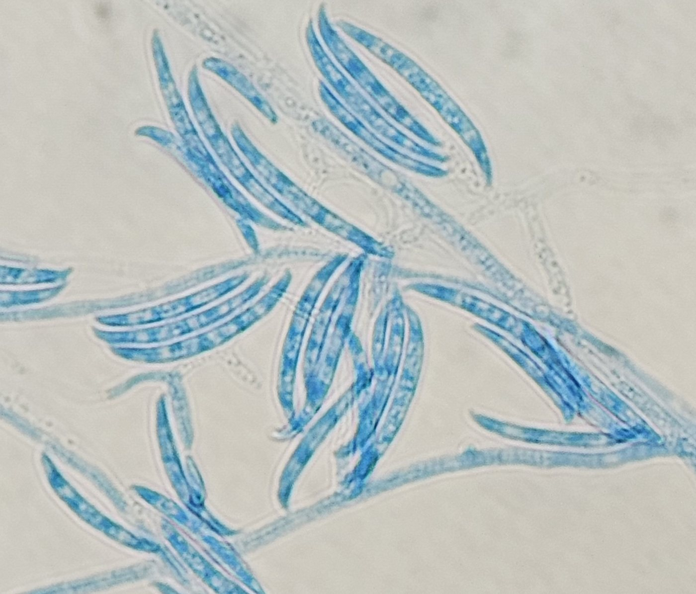
© Lab. LAMAM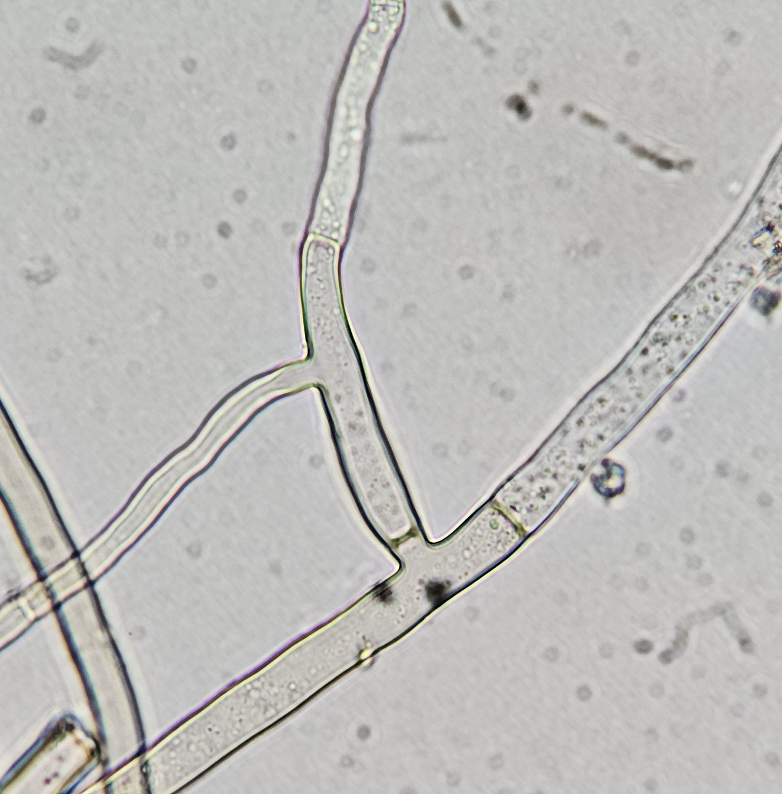
© Lab. LAMAM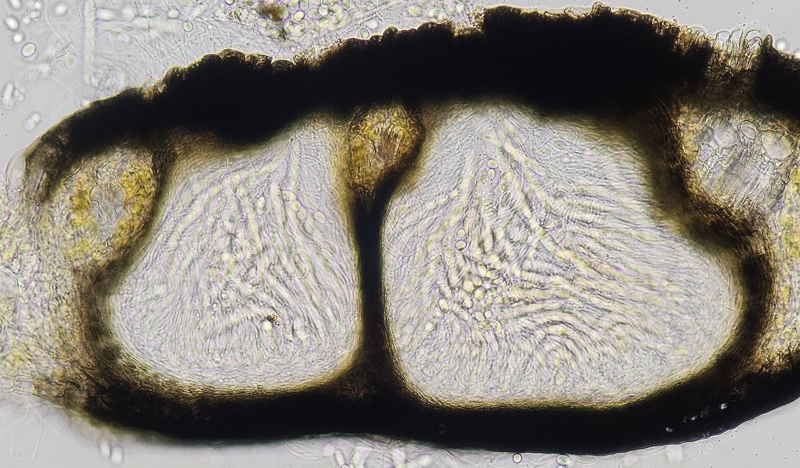
© Lab. LAMAM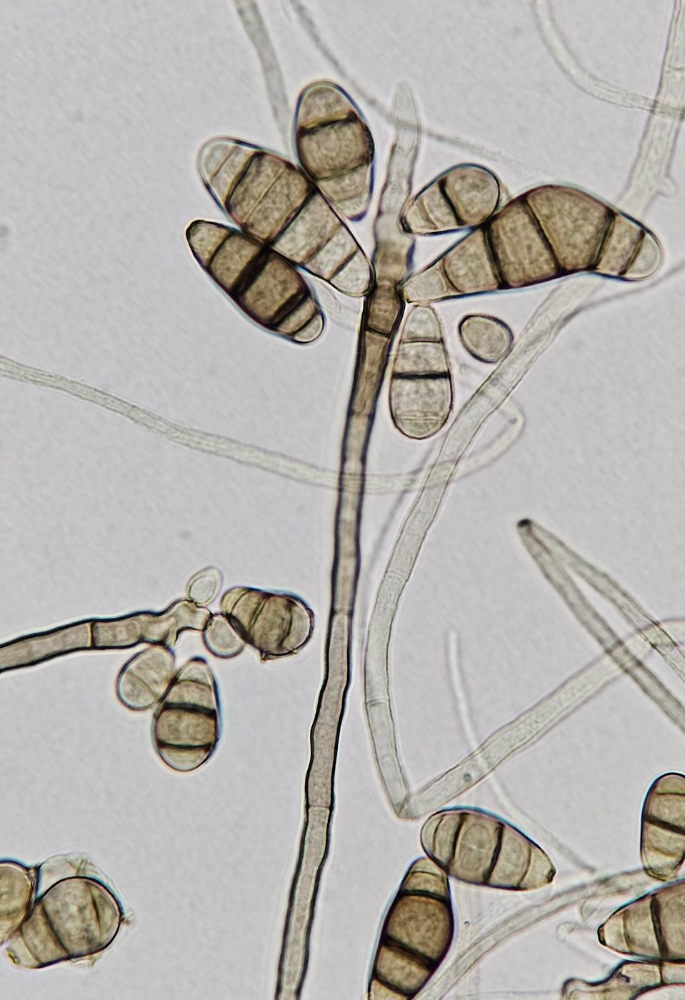
© Lab. LAMAM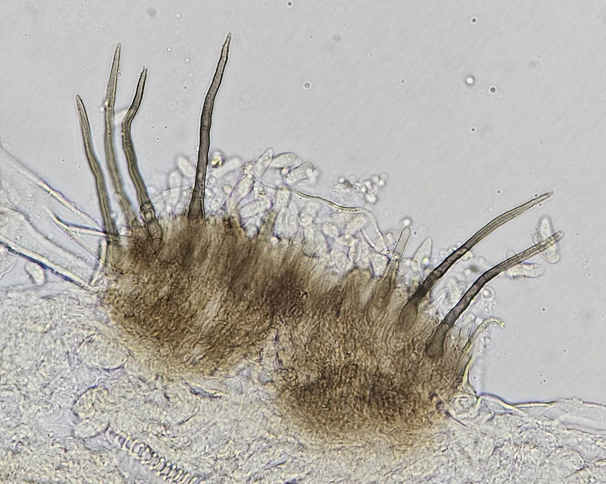
© Lab. LAMAM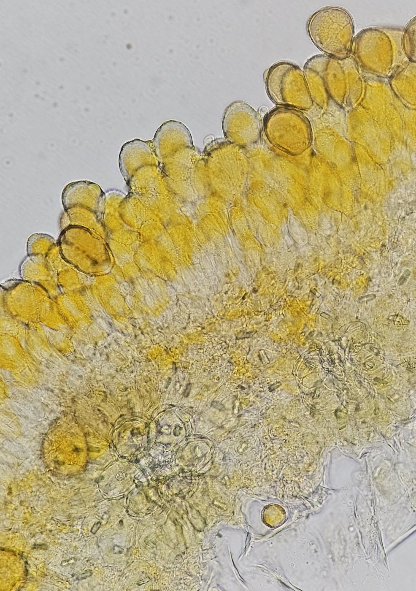
© Lab. LAMAM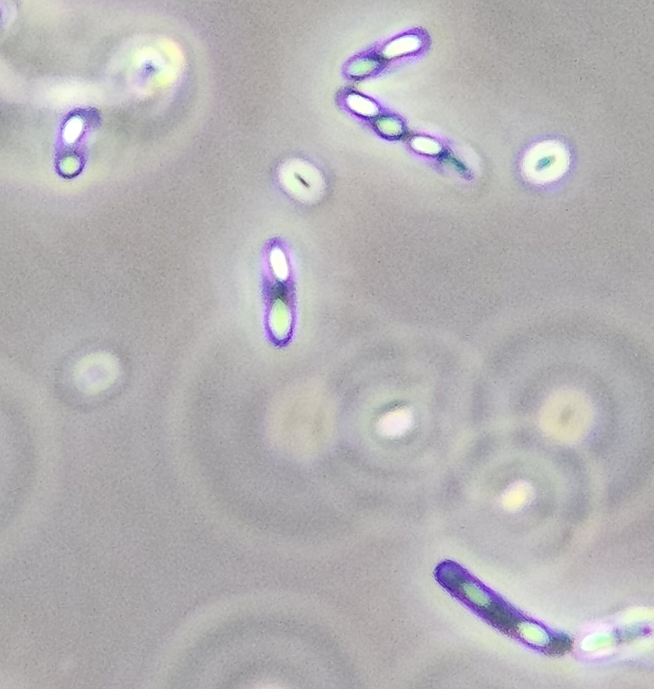
© Lab. LAMAM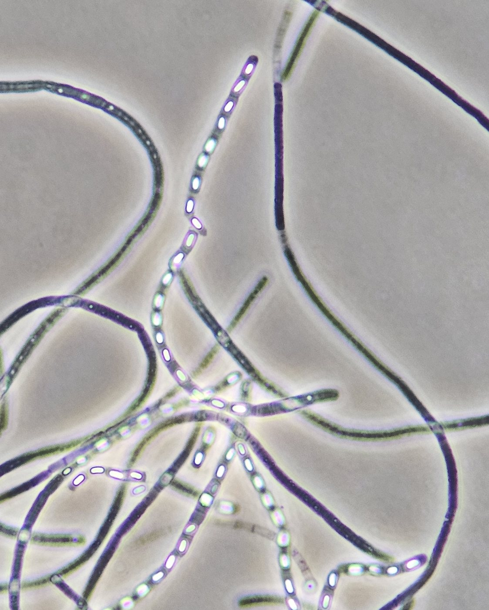
© Lab. LAMAM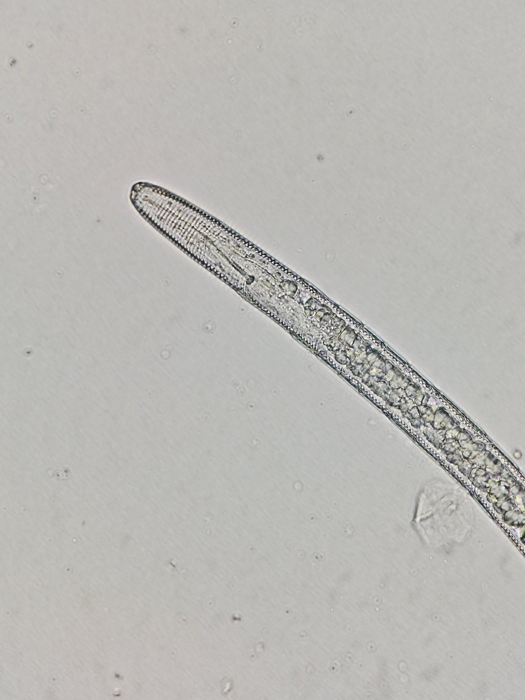
© Lab. LAMAM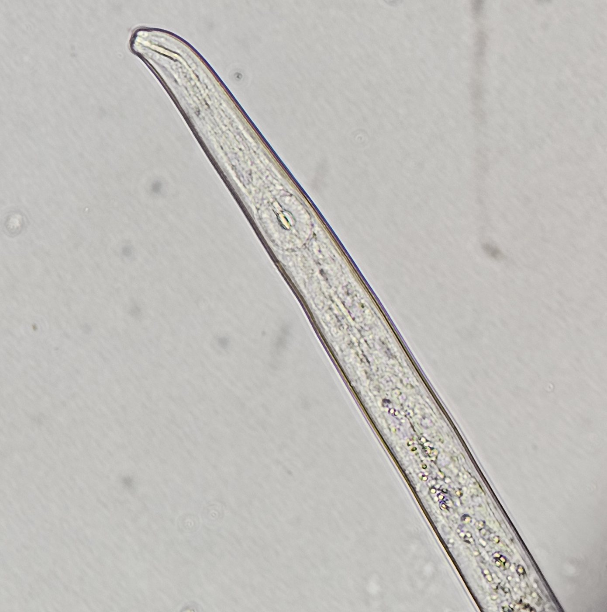
© Lab. LAMAM